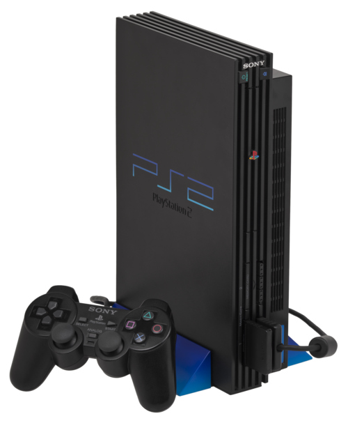

Bem-vindo ao espaço definitivo para os apaixonados por videogame e, especialmente, para aqueles que guardam um carinho nostálgico pela era dourada dos consoles! Se você viveu os anos 2000, sabe perfeitamente que o PlayStation 2 não foi apenas um sucesso de vendas, mas o palco de algumas das maiores revoluções da história dos games.
Esse site tem 5 links internos, cada link falando sobre cada jogo específico. Os 5 links externos levam para a página da Wikipedia de cada de jogo.
Nossa missão aqui é celebrar essa máquina lendária. Selecionamos e reunimos os 5 títulos mais icônicos que definiram gerações, desafiaram os limites técnicos do hardware e deixaram marcas inesquecíveis na memória de milhões de jogadores. Prepare o memory card e confira a nossa lista com os melhores do PS2: God of War; Black; Shadow of the Colossus; Resident Evil 4; Grand Theft Auto: San Andreas.
É recomendado o uso apenas em computadores e no navegador do Google Chrome.